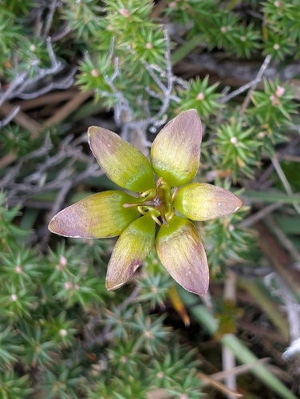

Campynemataceae
Campynemataceae is a very small family of monocots, consisting of only two genera, Campynema (1 species in Tasmania) and Campynemanthe (3 species in New Caledonia). These are small perennial herbs with linear basal leaves, inconspicuous flowers (often greenish/yellowish) with 6 free tepals and 6 stamens, a characteristically inferior ovary with 3 distinct stigmas, and capsule fruits. The family belongs to the order Liliales.
Overview
Campynemataceae represents a small, relictual lineage of monocotyledonous plants with a highly restricted and disjunct distribution reflecting ancient Gondwanan connections. The genus Campynema is found only in Tasmania (Australia), while Campynemanthe is endemic to the island of New Caledonia. These perennial herbs typically grow in moist, often cool, montane or subalpine habitats such as bogs, wet heathlands, or forest margins, often on nutrient-poor soils.
The plants are generally small and inconspicuous when not in flower, forming tufts of linear, grass-like leaves from short rhizomes. The flowers, borne singly or in small clusters, are not brightly colored (usually greenish, yellowish, or purplish-brown) and possess features like 6 free tepals, 6 stamens, and notably, an inferior ovary topped by 3 distinct stigmatic branches. The fruit is a dry capsule.
Phylogenetically, Campynemataceae is placed within the order Liliales, often considered closely related to Colchicaceae (Autumn Crocus family). Its unique features and isolated distribution make it significant for studies in monocot evolution and biogeography.
Quick Facts
- Scientific Name: Campynemataceae
- Common Name: (None)
- Number of Genera: 2 (Campynema, Campynemanthe)
- Number of Species: 4
- Distribution: Endemic to Tasmania (Campynema) and New Caledonia (Campynemanthe).
- Evolutionary Group: Monocots - Liliales
- Habit: Small perennial herbs.
Key Characteristics
Growth Form and Habit
Small perennial herbs growing from short rhizomes or rootstocks, forming tufts. Plants are glabrous (hairless).
Leaves
Leaves are few, mostly basal or clustered near the base of the stem, sometimes with a few smaller leaves along the stem (cauline). They are linear or narrowly lanceolate, with parallel venation, and sheathing bases.
Flowers and Inflorescence
Flowers are borne either solitary and terminal (Campynema) or in few-flowered terminal umbel-like cymes or clusters (Campynemanthe), often subtended by bracts. Flowers are bisexual, radially symmetrical (actinomorphic), relatively small, and typically colored greenish, yellowish, or purplish-brown. They are 3-merous.
- Perianth: Consists of 6 free (separate), persistent tepals, arranged in two similar whorls of 3. Tepals lack spots or prominent nectaries.
- Stamens: 6, arranged in two whorls of 3, with distinct filaments. Anthers open via longitudinal slits and face outwards (extrorse).
- Ovary: Distinctly inferior (positioned below the attachment of the tepals and stamens). Composed of 3 fused carpels forming 3 locules. Placentation is axile, with numerous ovules per locule. A single short style arises from the top of the ovary, dividing into 3 distinct, often recurved or spreading stigmatic branches.
Fruits and Seeds
The fruit is a dry, dehiscent loculicidal capsule, opening by 3 valves from the apex downwards. It is crowned by the remnants of the persistent tepals and style branches.
Seeds are numerous, small, and angled or somewhat flattened. They contain endosperm.
Chemical Characteristics
Detailed chemical studies are limited for this small family. They may contain alkaloids or steroidal saponins, compounds found in related families within the Liliales order.
Field Identification
Identifying Campynemataceae requires knowledge of its highly restricted distribution and careful observation of its floral structure, particularly the inferior ovary and 3 distinct stigmas:
Primary Identification Features
- Habit: Small perennial herb with basal, linear leaves.
- Location: Restricted to specific habitats in either Tasmania (Campynema) or New Caledonia (Campynemanthe).
- Flowers: Small, 3-merous, with 6 free tepals (often greenish/yellowish/purplish), borne solitary or in small terminal clusters.
- Ovary Position: Ovary is distinctly inferior.
- Stigmas: Style terminates in 3 distinct branches.
- Fruit: A 3-valved capsule crowned by persistent flower parts.
Secondary Identification Features
- Plant Size: Generally small plants.
- Flower Color: Typically inconspicuous colors.
- Stamens: 6 free stamens.
- Habitat: Moist montane or subalpine areas (bogs, wet heath, forest edges).
Seasonal Identification Tips
- Flowering: Flowers appear seasonally, usually in spring or summer, and are necessary for definitive identification based on ovary position and stigma structure.
- Vegetative State: The tufts of linear leaves might be visible year-round but are easily confused with other monocots without flowers or fruits.
Common Confusion Points
- Iridaceae (Iris Family): Occur in similar regions (esp. Tasmania); often have linear leaves and 6 tepals, but crucially have only 3 stamens (vs. 6 in Campynemataceae) and flowers are often more showy and sometimes zygomorphic. Ovary is inferior.
- Liliaceae s.l. / Colchicaceae / Melanthiaceae: These relatives in Liliales typically have superior ovaries (vs. inferior in Campynemataceae).
- Hypoxidaceae (Star Grass Family): Also Asparagales (not Liliales), often have yellow star-like flowers and inferior ovaries, but typically have hairy leaves and different stigma structure (often fused or less distinctly branched).
- Small Grasses/Sedges/Rushes: Vegetatively similar, but have highly reduced, non-petaloid flowers lacking the structure of Campynemataceae.
Within Tasmania or New Caledonia, identifying a small herb with basal linear leaves, 6 free tepals, 6 stamens, and especially an inferior ovary topped by 3 distinct stigmas strongly points to Campynemataceae.
Field Guide Quick Reference
Look For:
- Small perennial herb
- Basal, linear leaves
- Endemic to Tasmania OR New Caledonia
- Flowers solitary or small terminal clusters
- 6 free tepals (greenish/yellow/purplish)
- 6 stamens
- Ovary inferior
- 3 distinct stigma branches
- Fruit a 3-valved capsule
Key Variations (between genera):
- Campynema: Flowers solitary (Tasmania).
- Campynemanthe: Flowers in umbel-like cymes (New Caledonia).
Notable Examples
The family contains only four species across two geographically separated genera.

Campynema lineare
(No common name)
The single species in its genus, endemic to Tasmania, Australia. It is a small perennial herb found in alpine and subalpine bogs and wet heathlands. It produces a basal tuft of linear leaves and a solitary, terminal, nodding flower with greenish-yellow or purplish tepals, 6 stamens, and an inferior ovary with 3 stigmas.

Campynemanthe species (e.g., C. viridiflora)
(No common name)
This genus comprises three species, all endemic to the island of New Caledonia. They are small herbs typically found in moist forests or maquis vegetation. Unlike Campynema, the small, greenish flowers are borne in few-flowered, umbel-like terminal clusters. They share the key family traits of 6 free tepals, 6 stamens, and an inferior ovary with 3 stigmas.
Phylogeny and Classification
Campynemataceae is classified within the monocot order Liliales. This order includes well-known families like Liliaceae (true lilies), Colchicaceae (autumn crocuses), and Smilacaceae (greenbriers). Molecular phylogenetic studies place Campynemataceae as an early-diverging lineage within Liliales.
Its closest relative is often considered to be the family Colchicaceae, although relationships among the basal lineages of Liliales can sometimes be complex to resolve fully. The highly restricted and disjunct distribution of Campynemataceae – with one genus in Tasmania and the other in New Caledonia – is a classic example of a Gondwanan relict pattern, suggesting the family represents an ancient lineage whose ancestors were present before the final breakup of the southern supercontinent.
Position in Plant Phylogeny
- Kingdom: Plantae
- Clade: Angiosperms (Flowering plants)
- Clade: Monocots
- Order: Liliales
- Family: Campynemataceae
Evolutionary Significance
Despite its small size, Campynemataceae is significant for:
- Basal Liliales Lineage: Its position near the base of the Liliales order helps in understanding the early evolution and ancestral characteristics of this major monocot group.
- Biogeography: The Tasmania-New Caledonia disjunction provides compelling evidence for Gondwanan vicariance or ancient dispersal pathways, illustrating how past continental arrangements influence modern biodiversity patterns.
- Character Evolution: The presence of an inferior ovary in Campynemataceae is notable within Liliales (where superior ovaries are more common), contributing to studies of floral evolution.
- Relictual Status: Represents a surviving remnant of an ancient lineage, highlighting the importance of specific regions (Tasmania, New Caledonia) as refugia for biodiversity.